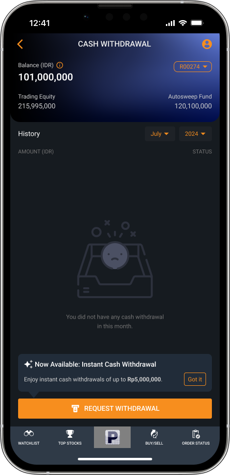
Step 1 · Home
Announce instant withdrawal
A tooltip tells users Instant Cash Withdrawal is now available, so they discover it without hunting.
Cash withdrawal lets a user move funds from their RDI (investment account) to their personal bank account.
The size of most withdrawal requests. These are small, low-risk transactions.
Withdrawal requests submitted before 10:00 AM are processed the same day. Requests submitted after 10:00 AM are processed within the next two days.
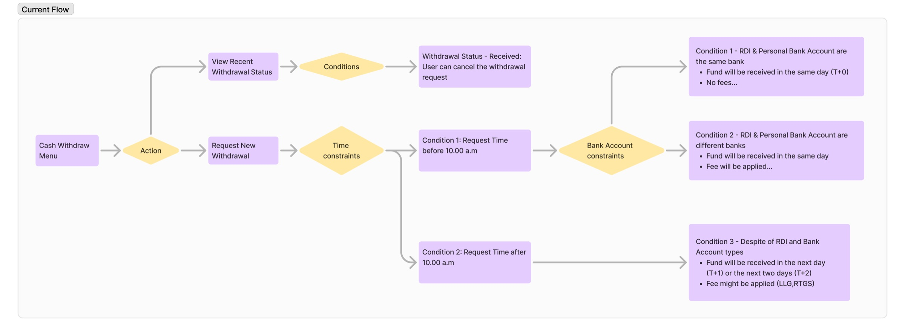
How might we Help users withdraw cash with full confidence in when it will arrive and what it will cost, while introducing a faster settlement option with minimal decision friction?
I walked through the existing seven-screen flow, from the account menu to withdrawal history.
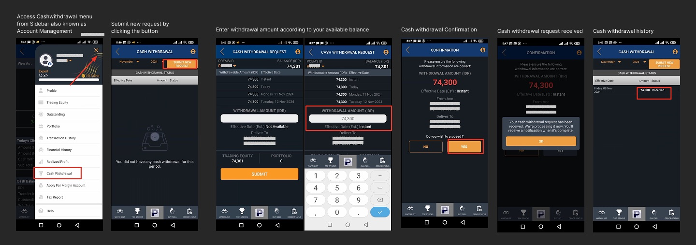
I scored the flow against Nielsen Norman's 10 usability heuristics. It turned up 12 issues across 8 of them.
| # | Heuristic | Finding | Severity |
|---|---|---|---|
| 1 | Visibility of system status | "Effective Date (Est.)" shows "Not Available" before an amount is entered. | Major |
| No step or progress indicator, so users can't tell how many steps remain. | Medium | ||
| The submit button is active before any amount is entered. It should stay disabled until there is an amount. | Major | ||
| 2 | Match between system & real world | No issues found | |
| 3 | User control & freedom | The confirmation screen offers "NO" and "YES", but it's unclear whether "NO" returns to an editable form. | Major |
| 4 | Consistency & standards | The four "Withdrawal Amount" rows are clickable quick-select buttons, but they look like plain white text. | Minor |
| "No" and "Yes" are uncommon button labels. Financial apps usually use "Cancel" and "Confirm". | Medium | ||
| The amount on the confirmation page is red, which the design system reserves for warnings and losses. | Minor | ||
| 5 | Error prevention | Users can enter more than the withdrawable amount and still press the button. The warning only appears afterwards. | Major |
| 6 | Recognition rather than recall | Trading equity and portfolio values sit below the input, so the numeric keypad covers them. | Medium |
| 7 | Flexibility & efficiency | No instant warning. Users have to take an extra action before an alert appears. | Major |
| 8 | Aesthetic & minimalist design | No issues found | |
| 9 | Recognize, diagnose & recover from errors | The empty state says there's no history but not what to do. History is filtered by month, so a request made on the last day of a month disappears on the 1st. | Medium |
| 10 | Help & documentation | No info icons to explain the terms used on the withdrawal pages. | Medium |
Before designing, I compared how other investment and banking apps handle withdrawals.
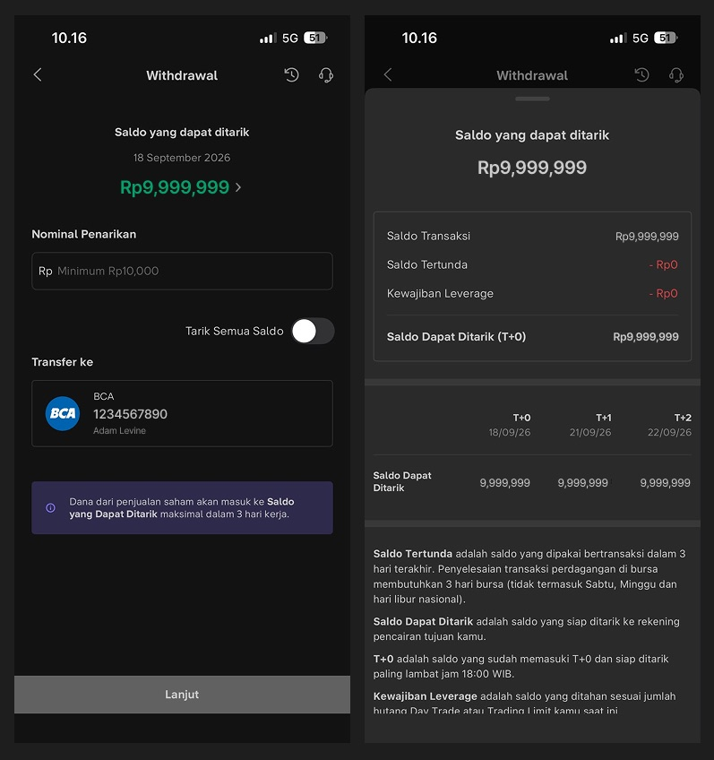
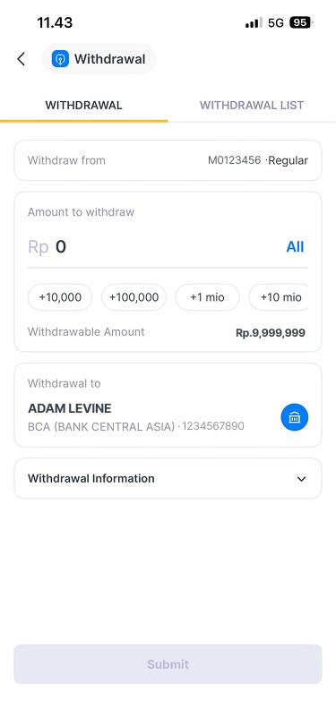
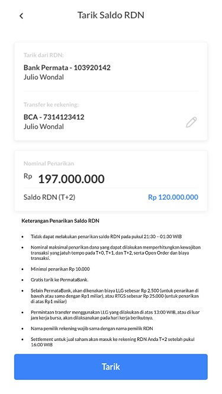

A tooltip tells users Instant Cash Withdrawal is now available, so they discover it without hunting.
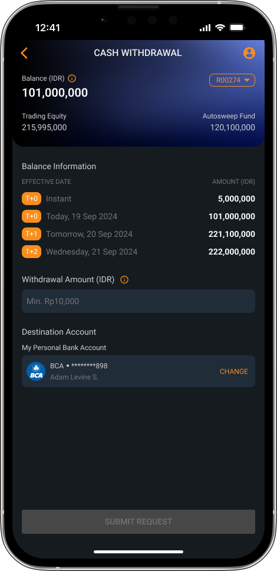
The text field states the minimum withdrawal amount up front.
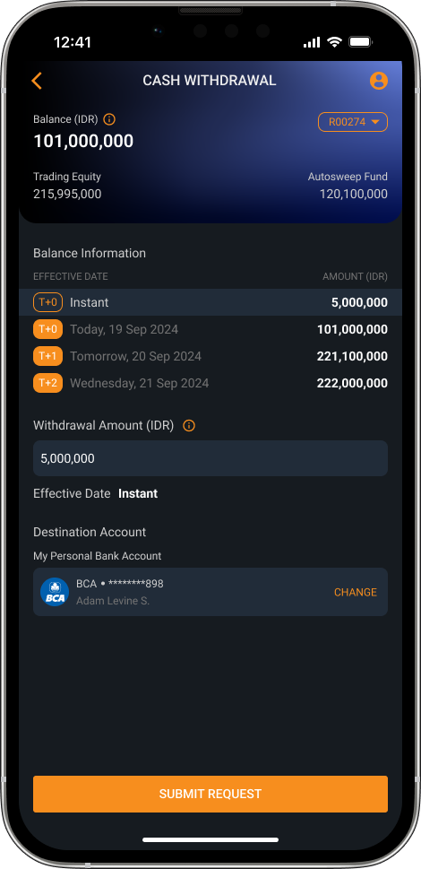
Each balance row (Instant, T+0, T+1, T+2) is now a visible button that fills in the amount.
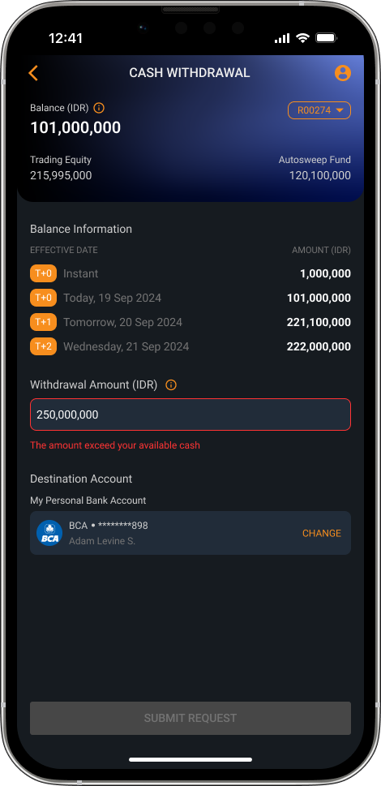
An inline error message and a disabled button stop users from submitting an invalid amount.
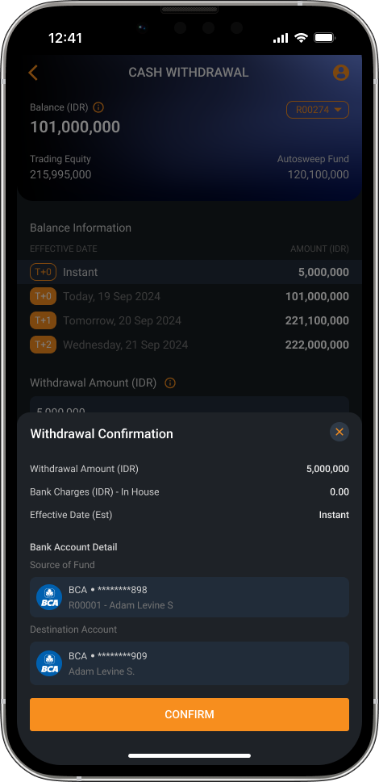
After choosing the amount and destination account (for users with more than one), a confirmation sheet shows the amount, bank charges, effective date and both accounts.
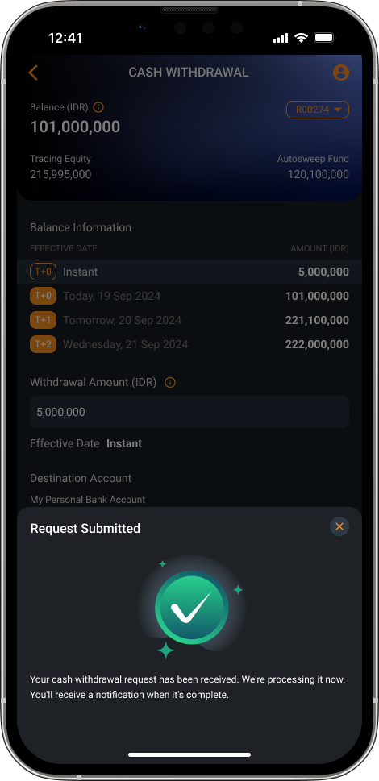
A clear success state, with a note that a notification will follow when the transfer completes.
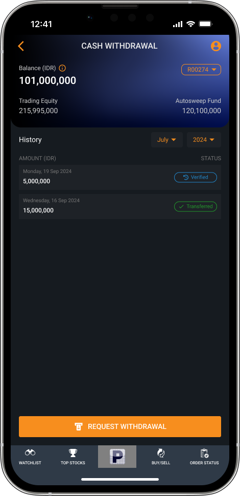
History shows each withdrawal with its status, to cut questions to customer service about where money is.
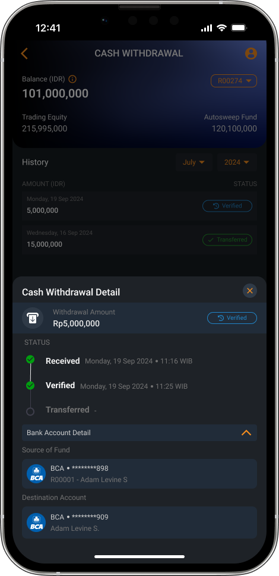
A Received, Verified, Transferred timeline lets users check progress themselves instead of contacting customer service.
No formal usability metrics were collected after launch. The signal so far is that no complaints about cash withdrawal have been reported since launch, from users or from internal stakeholders.
The dark purple theme fixed the immediate usability problems, but it drifted from the rest of the app and reads like a different product mid-flow. Next time I'd raise it as a design system conversation before shipping a locally optimized screen, even on a tight timeline, so it doesn't have to be retrofitted later.
I'd document the specific competitor screens and patterns I referenced during ideation, along with the user flow sketches I usually do on paper.
Run in-depth research on the revamp's impact, and add metrics that show how well it helps users.